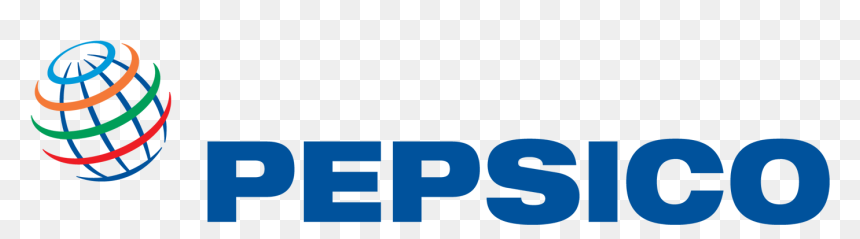
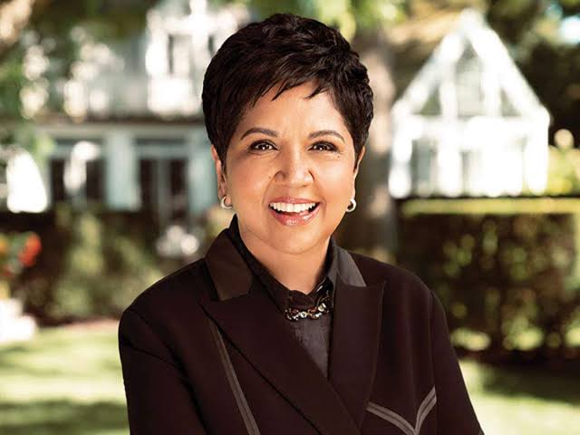

Strategic Innovation

Indra Nooyi is the former Chairman and Chief Executive Officer of PepsiCo (2006-2019);
a Fortune 50 company with operations in more than 180 countries.
In this role, Ms Nooyi was the chief architect of Performance with Purpose,
PepsiCo’s pledge to do what’s right for the business by being responsive to the needs of the world around it.
Nooyi was born on October 28, 1955,
in a Tamil Brahmin family in Madras , Tamil Nadu, India.
Nooyi did her schooling in Holy Angels Anglo Indian Higher Secondary School in T. Nagar.
While completing her studies, Nooyi played guitar in a band,
and excelled at cricket. Nooyi received bachelor's degrees in physics, chemistry
and mathematics from Madras Christian College of the University of Madras in 1975,
and a Post Graduate Programme Diploma from Indian Institute of Management Calcutta in 1976.
In 1978, Nooyi was admitted to Yale School of Management and moved to the United States,
where she earned a master's degree in public and private management in 1980.
Nooyi began her career in India with product manager positions at Johnson & Johnson
and the textile firm Beardsell Ltd.
While attending Yale School of Management, Nooyi completed a summer internship
with Booz Allen Hamilton.
In 1980, Nooyi joined the Boston Consulting Group (BCG) as a strategy consultant,
and then worked at Motorola as vice president and Director of Corporate Strategy and Planning,
followed by a stint at Asea Brown Boveri.

Nooyi joined PepsiCo in 1994, and was named CEO in 2006,
replacing Steven Reinemund, becoming the fifth CEO in PepsiCo's 44-year history.
She started as PepsiCo's senior vice president for strategic planning from 1994-1996,
then senior vice president for corporate strategy & development from 1996-2000.
Next, she became senior vice president & chief financial officer of PepsiCo from Feb 2000
to April 2001, moving then to president and chief financial officer.

"Leadership is not about being the boss. It's about taking responsibility and setting a good example."
"You cannot deliver value unless you anchor the company’s values. Values make an unsinkable ship."
"If all you do is work, you're missing the whole point of life."
"You have to be true to who you are. Be courageous. Be brave. Go beyond what you think is possible."